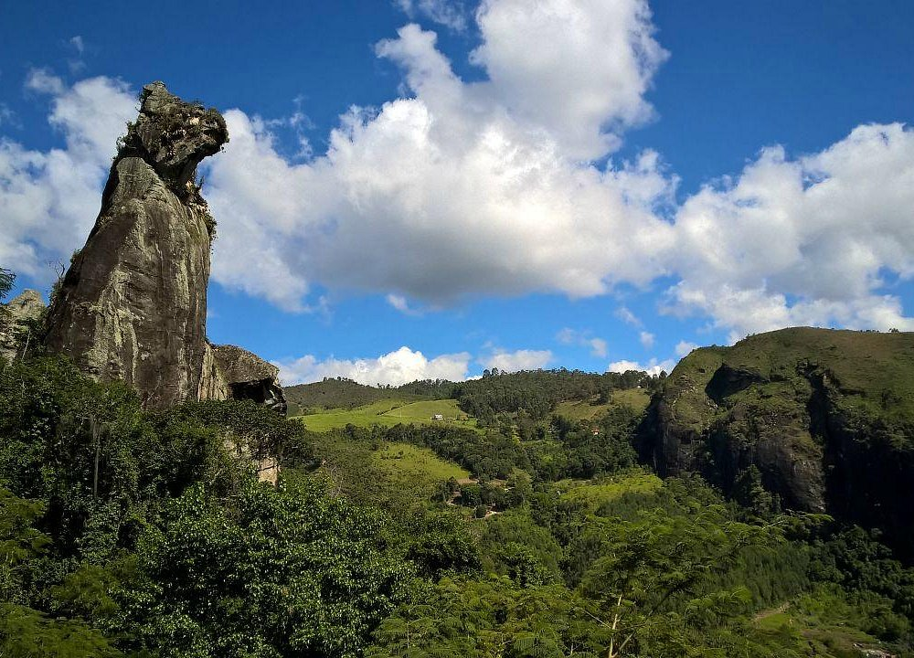

Situada à margem da Rodovia Nova Friburgo - Bom Jardim, encontra-se em extensa área, com altitude máxima em torno de 1.111 metros. É um conjunto de grutas e blocos de rochas superpostas que criam formas deslumbrantes. O ponto mais elevado é a Pedra do Cão Sentado, formação que se assemelha a um cão de guarda, com 100m de altura. Para atingi-lo o visitante percorre aproximadamente 1 km, ultrapassando 12 pontes e rústicas escadas.
.webp)
O Nova Friburgo Country Clube é um dos clubes mais tradicionais da cidade de Nova Friburgo, Brasil. Fundado em 20 de abril de 1957, o clube possui uma área de 194 mil metros quadrados e está localizado no Parque São Clemente, projetado por Glaziou, um paisagista francês. O clube é conhecido por suas áreas de jardins deslumbrantes, que incluem mais de 90 mil metros quadrados de ajardinamento
Fundado por padres e irmãos jesuítas vindos da Itália, no dia 12 de abril de 1886, ele começou a funcionar na casa-grande da antiga Fazenda do Morro Queimado, chamado de "Chateau du Röi" (Castelo do Rei, em francês) pelos colonos suíços, o rei, no caso era Dom João VI, que foi o autor do decreto que criou Friburgo. Desde a instalação da Vila de Nova Friburgo o Chateau funcionava como sede da Câmara Municipal — que foi então o único Poder durante os primeiros 98 anos de existência da cidade, e cujo vereador mais votado acabava sendo o presidente do legislativo e, assim, acumulava também funções administrativas.